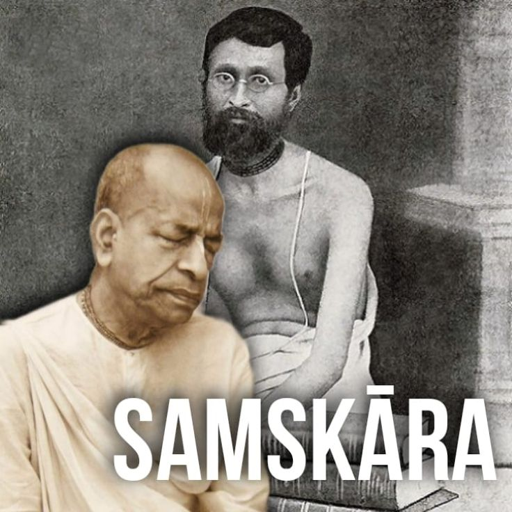

Samskār

When he stayed in Delhi I remember he was taking one Lākha nāma every day. His māla was always with him. He told this to me. In spite of all this literary work-writing and editing-he would chant 100,000 nāma religiously. While living in the matha he chanted this, and I heard that even in grhastha, because he was initiated by Śrīla Bhaktisiddhānta, he was also doing this. He had the samskāra to do this.
Ref ~ HH Bhakti Dīpaka Bhāratī Swāmi (Prabhupāda's younger godbrother) in interview with HG Mulaprakrītī devi Dāsi.
Jay Śrīla Prabhupāda!